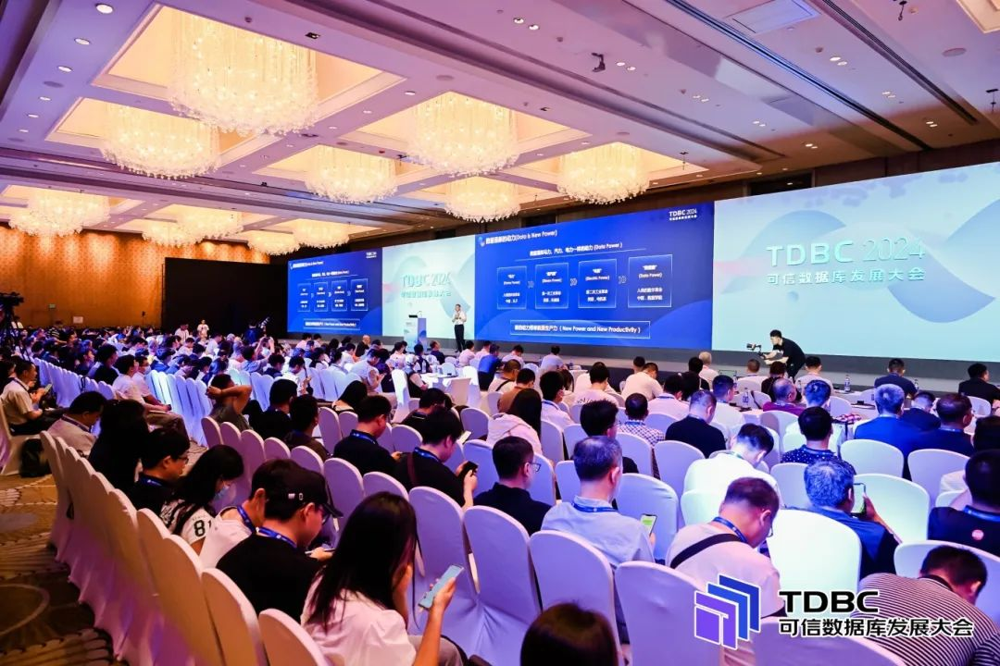
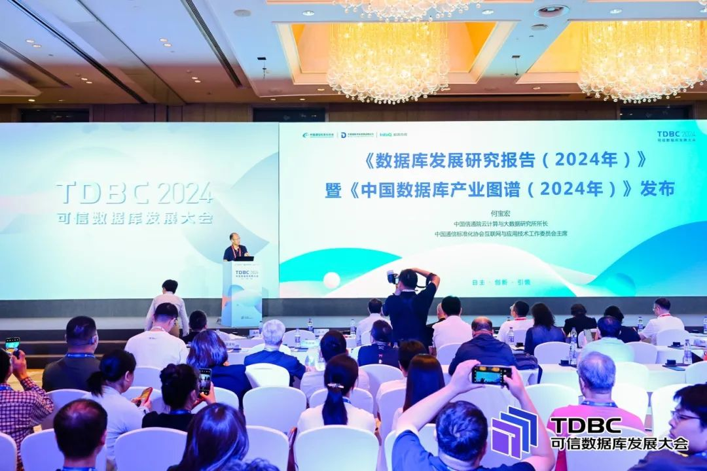
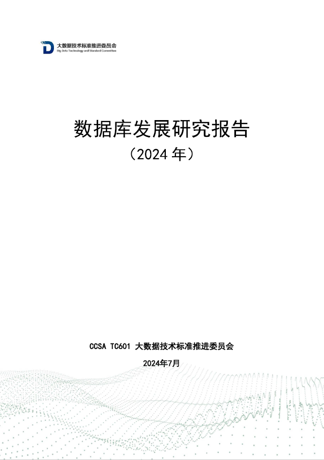
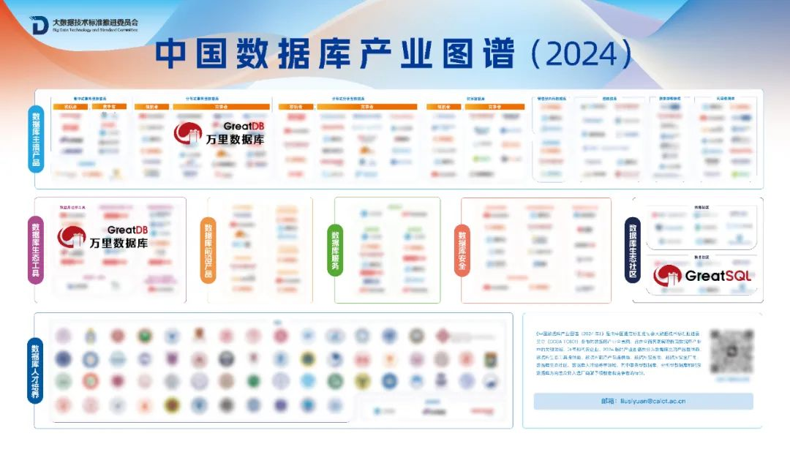
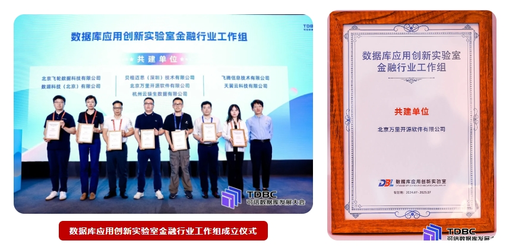

重磅丨报告参编+入选图谱+首批共建！万里数据库闪耀2024可信数据库大会
7月16日，2024可信数据库发展大会（以下称“大会”）在京成功召开。万里数据库作为领先的国产自主数据库厂商，连续3年参与《数据库发展研究报告》编写，成功入选《中国数据库产业图谱》。与此同时，万里数据库作为首批共建单位，成立数据库应用创新实验室金融行业工作组，助力金融行业数据库应用创新发展。

本届可信数据库大会以“自主、创新、引领”为主题，邀请行业内近百位专家学者、企业代表围绕数据库技术、产业和生态热点进行研讨，共同论道人工智能浪潮和数据要素背景下，我国数据库产业高质量发展新路径。大会上，《数据库发展研究报告（2024年）》及《中国数据库产业图谱（2024年）》等多项研究成果正式发布，获得业界广泛关注。
连续三年 参编《数据库发展研究报告》+入选《中国数据库产业图谱》
主论坛上，中国通信标准化协会互联网与应用技术工作委员会主席何宝宏正式发布《数据库发展研究报告（2024年）》及《中国数据库产业图谱（2024年)》。

万里数据库作为信通院数据库应用创新实验室的成员单位之一，基于数据库的技术研发能力和多年实践经验，连续三年参与《数据库发展研究报告》编制工作，持续助力数据库产业研究，为数据库产业发展增添动力。

与此同时，凭借卓越的数据库产品技术研发实力和市场表现，万里数据库再次入选《中国数据库产业图谱(2024)》“数据库主流产品-分布式事务型数据库”、“数据库生态工具-数据库迁移工具”等多个板块。公司主导成立的GreatSQL社区入选“数据库生态社区-技术社区”板块。

首批共建 成为“数据库应用创新实验室金融行业工作组”首批共建单位
在金融行业数据库应用创新分论坛上，数据库应用创新实验室金融行业工作组正式成立，并公布了首批共建名单。万里数据库成为“数据库应用创新实验室金融行业工作组”首批共建单位之一，现场上台领取证书。

目前，万里数据库已在金融行业沉淀了多项核心能力，以信创数据库产品入选金融信创优秀解决方案，并先后通过首批分布式数据库金融场景应用评估和首批金融开源技术服务能力评估，以一站式数据管理平台和定制化解决方案，赋能金融业关键信息基础设施国产化与业务数智化升级。
未来，万里数据库将积极投身工作组，围绕金融行业数据库的标准编制、研究报告、生态活动、选型咨询等重点工作，为助力金融行业数据库技术迭代和应用场景拓展持续贡献力量。
在新一轮人工智能浪潮驱动下，全球数据库产业变革加剧，多强竞争格局逐步形成。得益于国家战略引领，我国数据库产业进入蓬勃发展期和关键应用期。万里数据库将秉持初心，持续探索数据库产业的基础研究和技术创新之路，不断打磨产品和服务能力，与产业各方携手合作，以数据库技术的蓬勃创新之力，推动数据库产业高质量发展。